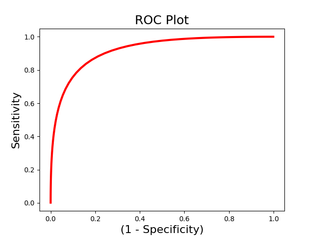
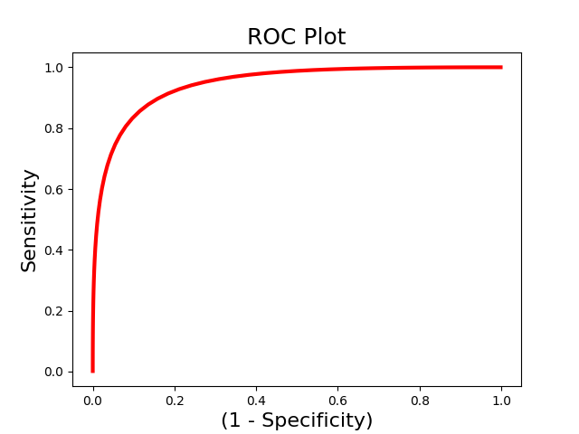
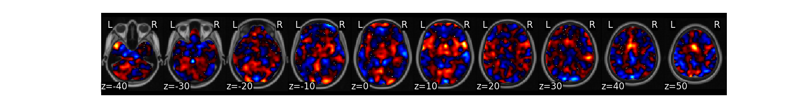
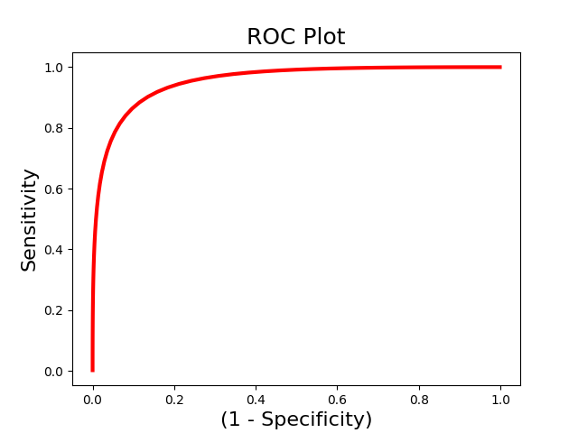
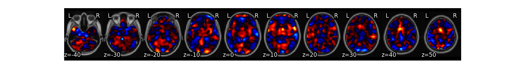
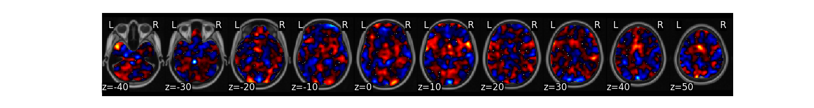

Note
Go to the end to download the full example code
Multivariate Classification¶
This tutorial provides an example of how to run classification analyses.
Load & Prepare Data¶
First, let’s load the pain data for this example. We need to create a data object with high and low pain intensities. These labels need to be specified in the dat.Y field as a pandas dataframe. We also need to create a vector of subject ids so that subject images can be held out together in cross-validation.
from nltools.datasets import fetch_pain
import numpy as np
import pandas as pd
data = fetch_pain()
high = data[np.where(data.X['PainLevel']==3)[0]]
low = data[np.where(data.X['PainLevel']==1)[0]]
dat = high.append(low)
dat.Y = pd.DataFrame(np.concatenate([np.ones(len(high)),np.zeros(len(low))]))
subject_id = np.concatenate([high.X['SubjectID'].values,low.X['SubjectID'].values])
/usr/share/miniconda3/envs/test/lib/python3.8/site-packages/nilearn/maskers/nifti_masker.py:108: UserWarning: imgs are being resampled to the mask_img resolution. This process is memory intensive. You might want to provide a target_affine that is equal to the affine of the imgs or resample the mask beforehand to save memory and computation time.
warnings.warn(
Classification with Cross-Validation¶
We can now train a brain model to classify the different labels specified in dat.Y. First, we will use a support vector machine with 5 fold cross-validation in which the same images from each subject are held out together. The predict function runs the classification multiple times. One of the iterations uses all of the data to calculate the ‘weight_map’. The other iterations estimate the cross-validated predictive accuracy.
svm_stats = dat.predict(algorithm='svm',
cv_dict={'type': 'kfolds','n_folds': 5, 'subject_id':subject_id},
**{'kernel':"linear"})
- 

overall accuracy: 1.00
overall CV accuracy: 0.79
SVMs can be converted to predicted probabilities using Platt Scaling
platt_stats = dat.predict(algorithm='svm',
cv_dict={'type': 'kfolds','n_folds': 5, 'subject_id':subject_id},
**{'kernel':'linear','probability':True})
- 
- 
overall accuracy: 1.00
overall CV accuracy: 0.79
Standard OLS Logistic Regression.
logistic_stats = dat.predict(algorithm='logistic',
cv_dict={'type': 'kfolds','n_folds': 5, 'subject_id':subject_id})
- 
- 
/usr/share/miniconda3/envs/test/lib/python3.8/site-packages/sklearn/linear_model/_logistic.py:460: ConvergenceWarning: lbfgs failed to converge (status=1):
STOP: TOTAL NO. of ITERATIONS REACHED LIMIT.
Increase the number of iterations (max_iter) or scale the data as shown in:
https://scikit-learn.org/stable/modules/preprocessing.html
Please also refer to the documentation for alternative solver options:
https://scikit-learn.org/stable/modules/linear_model.html#logistic-regression
n_iter_i = _check_optimize_result(
/usr/share/miniconda3/envs/test/lib/python3.8/site-packages/sklearn/linear_model/_logistic.py:460: ConvergenceWarning: lbfgs failed to converge (status=1):
STOP: TOTAL NO. of ITERATIONS REACHED LIMIT.
Increase the number of iterations (max_iter) or scale the data as shown in:
https://scikit-learn.org/stable/modules/preprocessing.html
Please also refer to the documentation for alternative solver options:
https://scikit-learn.org/stable/modules/linear_model.html#logistic-regression
n_iter_i = _check_optimize_result(
overall accuracy: 1.00
overall CV accuracy: 0.84
Ridge classification
ridge_stats = dat.predict(algorithm='ridgeClassifier',
cv_dict={'type': 'kfolds','n_folds': 5, 'subject_id':subject_id})
- 
overall accuracy: 1.00
overall CV accuracy: 0.77
ROC Analyses¶
We are often interested in evaluating how well a pattern can discriminate between different classes of data. However, accuracy could be high because of a highly sensitive but not specific model. Receiver operator characteristic curves allow us to evaluate the sensitivity and specificity of the model. and evaluate how well it can discriminate between high and low pain using We use the Roc class to initialize an Roc object and the plot() and summary() methods to run the analyses. We could also just run the calculate() method to run the analysis without plotting.
from nltools.analysis import Roc
roc = Roc(input_values=svm_stats['dist_from_hyperplane_xval'],
binary_outcome=svm_stats['Y'].astype(bool))
roc.plot()
roc.summary()

------------------------
.:ROC Analysis Summary:.
------------------------
Accuracy: 0.82
Accuracy SE: 0.11
Accuracy p-value: 0.00
Sensitivity: 0.86
Specificity: 0.79
AUC: 0.88
PPV: 0.80
------------------------
The above example uses single-interval classification, which attempts to determine the optimal classification interval. However, sometimes we are intersted in directly comparing responses to two images within the same person. In this situation we should use forced-choice classification, which looks at the relative classification accuracy between two images. You must pass a list indicating the ids of each unique subject.
roc_fc = Roc(input_values=svm_stats['dist_from_hyperplane_xval'],
binary_outcome=svm_stats['Y'].astype(bool), forced_choice=subject_id)
roc_fc.plot()
roc_fc.summary()
------------------------
.:ROC Analysis Summary:.
------------------------
Accuracy: 1.00
Accuracy SE: 0.19
Accuracy p-value: 0.00
Sensitivity: 0.99
Specificity: 0.99
AUC: 0.99
PPV: 0.99
------------------------
Total running time of the script: (1 minutes 21.386 seconds)